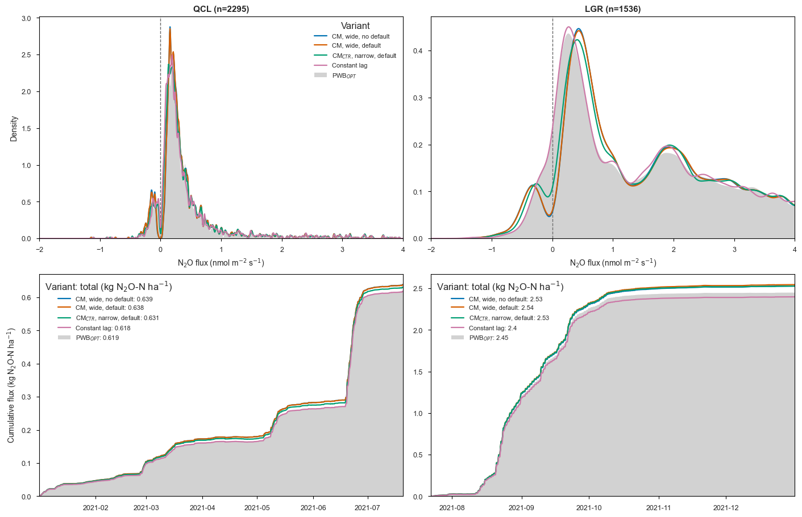
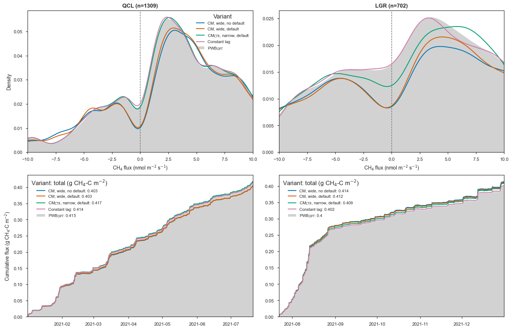

from datetime import datetime
from pathlib import Path
import numpy as np
import pandas as pd
import matplotlib.pyplot as plt
from scipy.stats import gaussian_kde
from diive.core.io.files import load_parquet
# White figure background (on screen and in saved PNGs).
plt.rcParams["figure.facecolor"] = "white"
plt.rcParams["savefig.facecolor"] = "white"
plt.rcParams["axes.facecolor"] = "white"
NB_START = datetime.now() # notebook start time (reported in the last cell)09 · Flux distribution and cumulative budget by variant
The half-hourly flux distribution and the running (cumulative) budget of the quality-controlled flux per variant, the single place this comparison is produced. It reads the flux processing chain output (notebook 05) and draws, per gas, one figure with two rows and two panels: the QCL campaign (2021_1) on the left and the LGR campaign (2021_2) on the right.
- Top row, flux density distribution. A lightly smoothed kernel density line of the half-hourly QC flux for each variant, with a dashed line at zero flux (after Vitale et al. 2024, Fig. 7). The covariance-maximization variants lose mass around zero, the “mirroring” bias (a bimodal dip); the PWB\(_{OPT}\) variant, drawn filled as the reference, keeps it.
- Bottom row, cumulative budget. The running sum of the flux integrated into a cumulative mass; lines that fan apart mean the time-lag setting accumulates into a different total even after quality control.
The comparison is paired: within each analyzer the variants are aligned on the timestamp index and only the half-hours where every variant has a quality-controlled flux are kept, so both rows describe exactly the same samples. Quality control removes a different set of half-hours per variant, so this common-sample step is what makes the variants comparable. The panel title reports the common-sample count (n).
One USTAR scenario is shown, USTAR_SCENARIO; re-run with a different value to compare scenarios. Two figures are produced, one per gas, saved as figures/09_cumulative_{scenario}_{gas}.png.
Inputs: - data/05-flux_processing_chain_parquet/ for the QC fluxes.
Imports
Configuration
USTAR_SCENARIO selects which of the three USTAR-filtered fluxes to sum. The QC flux column in each *_fpc.parquet follows the chain’s naming convention, {gas}_L3.1_L3.3_{scenario}_QCF. All five variants per analyzer are summed, including the PWB\(_{OPT}\) variant (*-5).
FPCDIR = Path("../data/05-flux_processing_chain_parquet") # QC fluxes
FIGDIR = Path("../figures")
FIGDIR.mkdir(parents=True, exist_ok=True)
YEAR = 2021
USTAR_SCENARIO = "CUT_50" # one of CUT_16 / CUT_50 / CUT_84
DPI = 300
# Cumulative-mass conversion. The fluxes are half-hourly in nmol m-2 s-1, so each
# record integrates over RECORD_SECONDS. The per-record factor turns one
# nmol m-2 s-1 value into cumulative mass of the reported element:
# nmol m-2 s-1 * RECORD_SECONDS -> nmol m-2 (per 30-min record)
# * 1e-9 -> mol m-2
# * molar mass -> g (element) m-2
# N2O is reported as N2O-N (two N atoms per molecule) and taken to kg ha-1;
# CH4 is reported as CH4-C and kept in g m-2.
RECORD_SECONDS = 1800 # 30-min flux averaging interval
M_N = 14.0067 # g mol-1, nitrogen
M_C = 12.011 # g mol-1, carbon
G_M2_TO_KG_HA = 10.0 # (g m-2) -> (kg ha-1): / 1000 g * 10000 m2
# The five time-lag variants per analyzer (the study variable).
ANALYZERS = {
"QCL": ["QCL-1", "QCL-2", "QCL-3", "QCL-4", "QCL-5"],
"LGR": ["LGR-1", "LGR-2", "LGR-3", "LGR-4", "LGR-5"],
}
# Per gas: flux column, pretty label, the cumulative-mass factor, and the unit of
# the cumulative series.
GASES = {
"N2O": {"flux": "FN2O", "label": "N$_2$O",
"factor": RECORD_SECONDS * 1e-9 * (2 * M_N) * G_M2_TO_KG_HA,
"cum_unit": "kg N$_2$O-N ha$^{-1}$"},
"CH4": {"flux": "FCH4", "label": "CH$_4$",
"factor": RECORD_SECONDS * 1e-9 * M_C,
"cum_unit": "g CH$_4$-C m$^{-2}$"},
}
# Meaningful variant names (by suffix number), matching notebook 08. Used as the
# legend labels instead of the bare codes. Method abbreviations follow Vitale
# et al. (2024): CM = covariance maximisation, CTR = constrained (narrow window),
# PWB_OPT = optimised pre-whitening with block-bootstrap.
VARIANT_NAMES = {
1: "CM, wide, no default",
2: "CM, wide, default",
3: "CM$_{CTR}$, narrow, default",
4: "Constant lag",
5: "PWB$_{OPT}$",
}
# One color per variant suffix, shared across analyzers and gases. Okabe-Ito
# colorblind-safe palette for variants 1 to 4 (blue, vermillion, bluish green,
# reddish purple); variant 5 (PWB_OPT reference) is drawn grey.
VAR_COLORS = {1: "#0072B2", 2: "#D55E00", 3: "#009E73", 4: "#CC79A7", 5: "#7F7F7F"}
def qc_col(fluxvar, scenario):
"""Name of the USTAR-filtered, QCF-accepted flux column in the fpc output."""
return f"{fluxvar}_L3.1_L3.3_{scenario}_QCF"
def variant_num(code):
"""Trailing variant number of a code, e.g. 'QCL-3' -> 3."""
return int(code.split("-", 1)[1])
print(f"Cumulative QC flux, USTAR scenario: {USTAR_SCENARIO}")Cumulative QC flux, USTAR scenario: CUT_50Load the QC fluxes
For each variant and gas, the QC flux is pulled from its *_fpc.parquet (the single USTAR_SCENARIO column), restricted to the analysis year.
all_codes = [c for codes in ANALYZERS.values() for c in codes]
qcflux = {} # (code, gas-name) -> QC flux series for the chosen USTAR scenario
for code in all_codes:
for gas, v in GASES.items():
df = load_parquet(filepath=str(FPCDIR / f"{code}_{v['flux']}_fpc.parquet"))
df = df.loc[df.index.year == YEAR]
qcflux[(code, gas)] = df[qc_col(v["flux"], USTAR_SCENARIO)]
for code in all_codes:
n = int(qcflux[(code, "N2O")].notna().sum())
print(f"{code}: {n} valid QC N2O ({USTAR_SCENARIO})") > Loaded .parquet file ..\data\05-flux_processing_chain_parquet\QCL-1_FN2O_fpc.parquet (0.034 seconds).
> Loaded .parquet file ..\data\05-flux_processing_chain_parquet\QCL-1_FCH4_fpc.parquet (0.009 seconds).
> Loaded .parquet file ..\data\05-flux_processing_chain_parquet\QCL-2_FN2O_fpc.parquet (0.009 seconds).
> Loaded .parquet file ..\data\05-flux_processing_chain_parquet\QCL-2_FCH4_fpc.parquet (0.009 seconds).
> Loaded .parquet file ..\data\05-flux_processing_chain_parquet\QCL-3_FN2O_fpc.parquet (0.009 seconds).
> Loaded .parquet file ..\data\05-flux_processing_chain_parquet\QCL-3_FCH4_fpc.parquet (0.010 seconds).
> Loaded .parquet file ..\data\05-flux_processing_chain_parquet\QCL-4_FN2O_fpc.parquet (0.009 seconds).
> Loaded .parquet file ..\data\05-flux_processing_chain_parquet\QCL-4_FCH4_fpc.parquet (0.008 seconds).
> Loaded .parquet file ..\data\05-flux_processing_chain_parquet\QCL-5_FN2O_fpc.parquet (0.008 seconds).
> Loaded .parquet file ..\data\05-flux_processing_chain_parquet\QCL-5_FCH4_fpc.parquet (0.007 seconds).
> Loaded .parquet file ..\data\05-flux_processing_chain_parquet\LGR-1_FN2O_fpc.parquet (0.006 seconds).
> Loaded .parquet file ..\data\05-flux_processing_chain_parquet\LGR-1_FCH4_fpc.parquet (0.007 seconds).
> Loaded .parquet file ..\data\05-flux_processing_chain_parquet\LGR-2_FN2O_fpc.parquet (0.007 seconds).
> Loaded .parquet file ..\data\05-flux_processing_chain_parquet\LGR-2_FCH4_fpc.parquet (0.007 seconds).
> Loaded .parquet file ..\data\05-flux_processing_chain_parquet\LGR-3_FN2O_fpc.parquet (0.009 seconds).
> Loaded .parquet file ..\data\05-flux_processing_chain_parquet\LGR-3_FCH4_fpc.parquet (0.009 seconds).
> Loaded .parquet file ..\data\05-flux_processing_chain_parquet\LGR-4_FN2O_fpc.parquet (0.011 seconds).
> Loaded .parquet file ..\data\05-flux_processing_chain_parquet\LGR-4_FCH4_fpc.parquet (0.008 seconds).
> Loaded .parquet file ..\data\05-flux_processing_chain_parquet\LGR-5_FN2O_fpc.parquet (0.009 seconds).
> Loaded .parquet file ..\data\05-flux_processing_chain_parquet\LGR-5_FCH4_fpc.parquet (0.007 seconds).
QCL-1: 2864 valid QC N2O (CUT_50)
QCL-2: 2848 valid QC N2O (CUT_50)
QCL-3: 2475 valid QC N2O (CUT_50)
QCL-4: 2359 valid QC N2O (CUT_50)
QCL-5: 2386 valid QC N2O (CUT_50)
LGR-1: 1923 valid QC N2O (CUT_50)
LGR-2: 1919 valid QC N2O (CUT_50)
LGR-3: 1820 valid QC N2O (CUT_50)
LGR-4: 1616 valid QC N2O (CUT_50)
LGR-5: 1607 valid QC N2O (CUT_50)Flux distribution and cumulative budget over common samples
One figure per gas, two rows by two panels: QCL (left) and LGR (right). Within each analyzer the variants are aligned and reduced to their common samples, and both rows are drawn from that same paired set.
The top row shows the half-hourly flux density distribution per variant, a lightly smoothed kernel density line (robust, undersmoothed bandwidth) over a fixed per-gas flux range (DENS_XLIM); watch for the covariance-maximization variants losing mass around zero relative to the filled PWB\(_{OPT}\) reference. The bottom row integrates the same half-hourly flux over time into a cumulative mass (N2O as kg N2O-N ha⁻¹, CH4 as g CH4-C m⁻²); each variant’s overall total (the final cumulative value) is shown in the legend, so the budget differences are read directly.
Two tuning knobs on the density row: DENS_XLIM sets the fixed x-range per gas, and KDE_BW_FACTOR sets the smoothing (smaller = sharper; lower it further if the near-zero dip is still smeared).
def style_axes(ax):
"""Black spines, short outward ticks, no grid."""
ax.grid(False)
for spine in ax.spines.values():
spine.set_color("black")
spine.set_linewidth(0.8)
ax.tick_params(which="major", length=3.5, width=0.8, direction="out", color="black")
DENS_XLIM = {"N2O": (-2, 4), "CH4": (-10, 10)} # fixed density x-range per gas (flux units)
KDE_N = 1000 # points on the density x-grid
KDE_BW_FACTOR = 0.2 # smoothing: smaller = sharper (resolves the near-zero dip)
def flux_kde(x, xs):
"""KDE of a flux sample on xs with a robust, lightly smoothed bandwidth. scipy's
default scales the bandwidth by the standard deviation, which the heavy-tailed
covariance-maximization variants inflate, smearing away the sharp near-zero
mirroring dip. Basing the bandwidth on min(std, IQR/1.349) and undersmoothing
(KDE_BW_FACTOR < 1) keeps that bimodal structure visible."""
x = np.asarray(x, dtype=float)
std = float(x.std())
q75, q25 = np.percentile(x, [75, 25])
robust = min(std, (q75 - q25) / 1.349) if q75 > q25 else std
if std == 0 or robust == 0:
robust = std = 1.0 # degenerate guard (does not occur for real flux)
bw = KDE_BW_FACTOR * x.size ** (-1 / 5) * robust / std # effective bw = factor*robust
return gaussian_kde(x, bw_method=bw)(xs)
for gas, v in GASES.items():
factor, cum_unit, glabel = v["factor"], v["cum_unit"], v["label"]
fig, axes = plt.subplots(2, len(ANALYZERS), figsize=(14, 9),
constrained_layout=True, squeeze=False)
for ci, (analyzer, codes) in enumerate(ANALYZERS.items()):
ax_den, ax_cum = axes[0, ci], axes[1, ci]
# Align the variants and keep only the common (paired) samples, so the
# density distributions (top) and the cumulative budgets (bottom) describe
# exactly the same set of half-hours.
frame = pd.DataFrame({code: qcflux[(code, gas)] for code in codes})
common = frame.dropna(how="any")
# Row 1: flux density distribution per variant, a lightly smoothed kernel
# density line over the common samples (cf. Vitale et al. 2024, Fig. 7). A
# dashed line marks zero flux; the covariance-maximization variants lose
# mass around zero (the "mirroring" bias, a bimodal dip) while the PWB_OPT
# variant, drawn as a grey shaded area (no line) as the reference, keeps it.
# The x-range is fixed per gas (DENS_XLIM) and flux_kde undersmooths, so the
# dip is not smeared out by the heavy-tailed CM variants.
lo, hi = DENS_XLIM[gas]
xs = np.linspace(lo, hi, KDE_N)
ax_den.axvline(0, color="0.4", ls="--", lw=1.0, zorder=0.5)
for code in codes:
num = variant_num(code)
dens = flux_kde(common[code].to_numpy(), xs)
if num == 5: # PWB_OPT reference: grey shaded area only, no line
ax_den.fill_between(xs, 0, dens, color=VAR_COLORS[num], alpha=0.35, lw=0,
zorder=0.8, label=VARIANT_NAMES[num])
else:
ax_den.plot(xs, dens, lw=1.6, color=VAR_COLORS[num], label=VARIANT_NAMES[num])
ax_den.set_xlim(lo, hi)
ax_den.set_ylim(bottom=0)
ax_den.set_xlabel(f"{glabel} flux (nmol m$^{{-2}}$ s$^{{-1}}$)")
ax_den.set_title(f"{analyzer} (n={common.shape[0]})", fontweight="bold")
style_axes(ax_den)
# Row 2: cumulative budget per variant over the same common samples,
# integrated from the half-hourly flux into a cumulative mass. Each
# variant's overall total (final cumulative value) is shown in the legend.
# The PWB_OPT reference is drawn as a grey shaded area (no line), matching
# the density row.
cum = common.cumsum() * factor
for code in codes:
num = variant_num(code)
total = cum[code].iloc[-1] if len(cum) else float("nan")
lbl = f"{VARIANT_NAMES[num]}: {total:.3g}"
if num == 5: # PWB_OPT reference: grey shaded area (no line)
ax_cum.fill_between(cum.index, 0, cum[code], color=VAR_COLORS[num],
alpha=0.35, lw=0, zorder=0.8, label=lbl)
else:
ax_cum.plot(cum.index, cum[code], lw=1.6, color=VAR_COLORS[num], label=lbl)
if len(cum.index):
ax_cum.set_xlim(cum.index.min(), cum.index.max())
ax_cum.set_ylim(bottom=0) # start the y-axis at exactly zero
style_axes(ax_cum)
ax_cum.legend(fontsize=8, loc="upper left", title=f"Variant: total ({cum_unit})")
axes[0, 0].set_ylabel("Density")
axes[0, 0].legend(fontsize=8, loc="upper right", title="Variant")
axes[1, 0].set_ylabel(f"Cumulative flux ({cum_unit})")
out = FIGDIR / f"09_cumulative_{USTAR_SCENARIO.lower()}_{gas.lower()}.png"
fig.savefig(out, dpi=DPI, bbox_inches="tight")
print(f"Saved {out}")
plt.show()Saved ..\figures\09_cumulative_cut_50_n2o.png
Saved ..\figures\09_cumulative_cut_50_ch4.png
Runtime
NB_END = datetime.now()
print(f"Start: {NB_START:%Y-%m-%d %H:%M:%S}")
print(f"End: {NB_END:%Y-%m-%d %H:%M:%S}")
print(f"Runtime: {NB_END - NB_START}")Start: 2026-07-13 18:35:28
End: 2026-07-13 18:35:33
Runtime: 0:00:04.673766